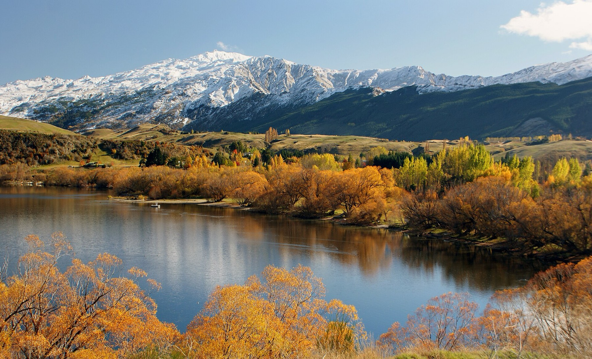
15,000 英尺跳伞
NZONE Skydive 皇后镇最高档位，出舱高度 15,000 英尺，自由落体约 60 秒。落地前整个瓦卡蒂普湖和卓越山脉都在脚下。抵达皇后镇第二天清早六点二十集合，天气不好还有后面两天可以顺延。
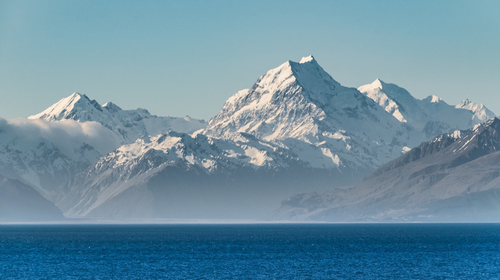
Self-drive · 南岛环线
2026 年 9 月底到 10 月初，从香港经悉尼进入新西兰，在基督城落地取车，沿东海岸南下但尼丁，穿过中奥塔哥抵达皇后镇，再经瓦纳卡、库克山、蒂卡波折回凯库拉出海，最后从基督城飞墨尔本回程。跳伞、冰川徒步、暗夜观星、出海观鲸，是这条线的四根主骨。
Route map · 地理走向
点位使用城市、机场、步道口或海湾的真实经纬度；彩色连线表达本次行程的衔接关系，不代表航迹或公路的逐弯实际走向。香港往返段超出本图范围，未作标示；凯库拉观鲸海域为示意点位，实际取决于当日抹香鲸位置。
Six highlights · 六个非做不可

NZONE Skydive 皇后镇最高档位，出舱高度 15,000 英尺，自由落体约 60 秒。落地前整个瓦卡蒂普湖和卓越山脉都在脚下。抵达皇后镇第二天清早六点二十集合，天气不好还有后面两天可以顺延。
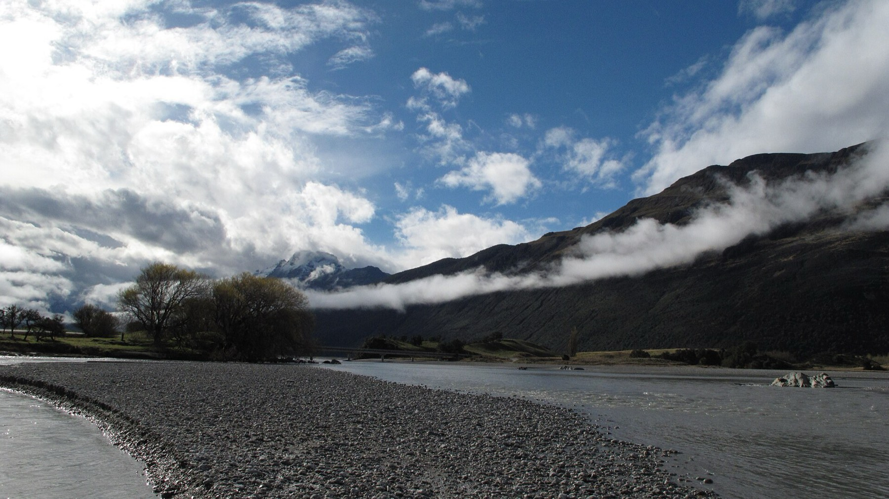
从皇后镇沿瓦卡蒂普湖西岸开到格林诺奇，进入达特／里斯河谷的冰川区。全程需要向导带队，是这趟单项最贵、也最不可替代的一天。集合点 35 Mull Street。
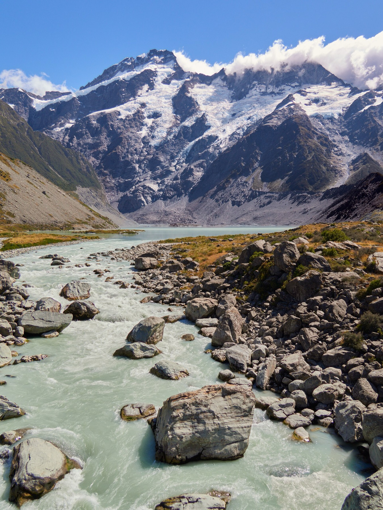
南岛最高峰脚下最经典的一条平缓步道，三座吊桥通向胡克冰川终端湖。前一晚住 Twizel，第二天早上从白马饭店方向进园，午后再往蒂卡波。
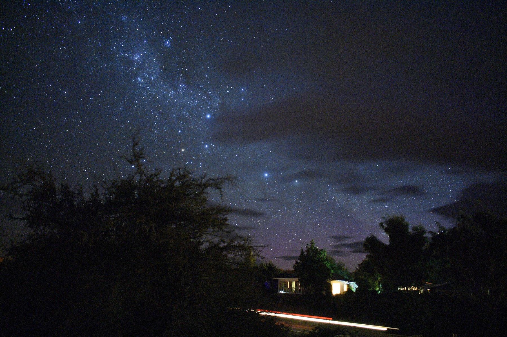
奥拉基·麦肯奇是全球最大的国际暗夜保护区之一，蒂卡波镇的路灯都为观星做过遮光改造。住一晚，把好牧羊人教堂的夜空留给自己。
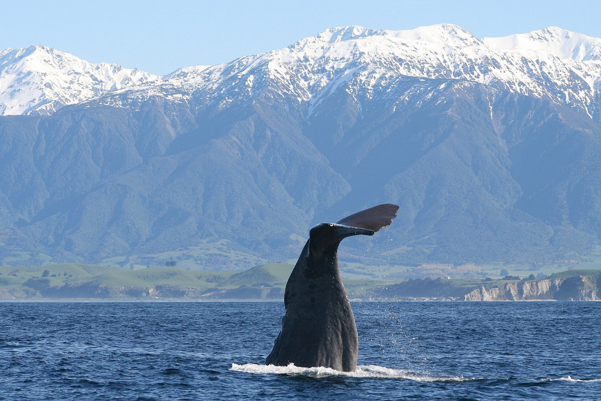
凯库拉海沟离岸极近，抹香鲸常年驻留。下午出海观鲸已预订；上午最近改成小镇慢逛，有精力再加皮划艇追海豚。原来约的 Tomo 船长海钓预订单还留着，待最终确认。
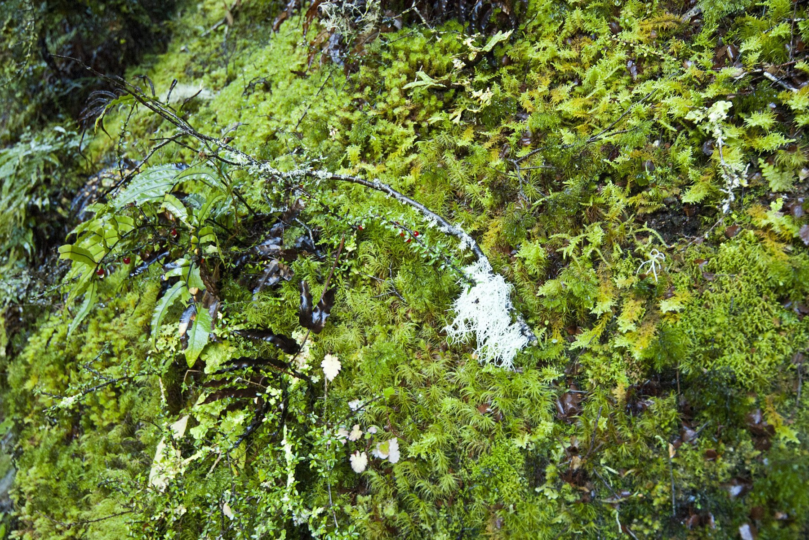
那棵长在湖里的柳树是南岛被拍得最多的一棵树，清晨光线最好。同一天可以再进马特森湾方向的马特波恩国家公园走罗布罗伊冰川步道，末段抬头就是悬冰川。
Weather · 行程天气
每天取当日主要停留地的数据。打开页面时会自动联网刷新最新预报；超出预报范围的日期，用 2015–2025 年同日的历史平均值兜底。数据来源 Open-Meteo（ECMWF / ERA5）。
Chapter 01
香港夜航过夜到悉尼，落地不进酒店，直接把一整个白天用完：海港区走一圈，再去邦迪走完那条最有名的海岸线，傍晚回机场飞基督城。第一晚住在基督城机场旁的 Sudima，方便第二天早上取车。
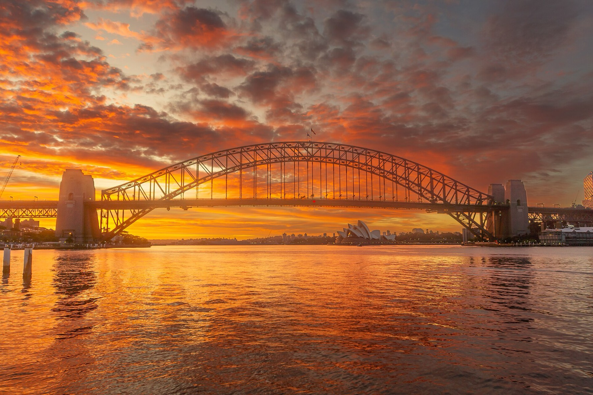
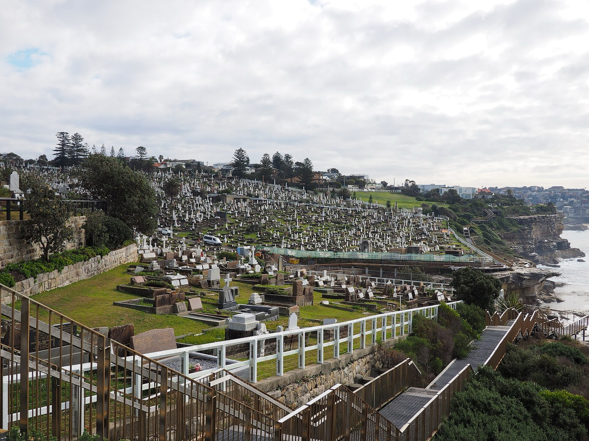
邦迪—库吉这条 6 公里海岸线几乎全程铺装，中途经过 Waverley 公墓的悬崖段，是把长途飞行的困意走掉最有效的方式。走完直接从库吉打车去机场，不用折回市区。
Chapter 02
从基督城取车沿一号公路南下四个半小时。但尼丁是苏格兰移民建起来的城市，火车站、八角广场和世界最陡街道都在步行范围内；城外的奥塔哥半岛才是重点——Sandfly Bay 的海狮、Tunnel Beach 的海崖，和天黑前那批上岸的小蓝企鹅。
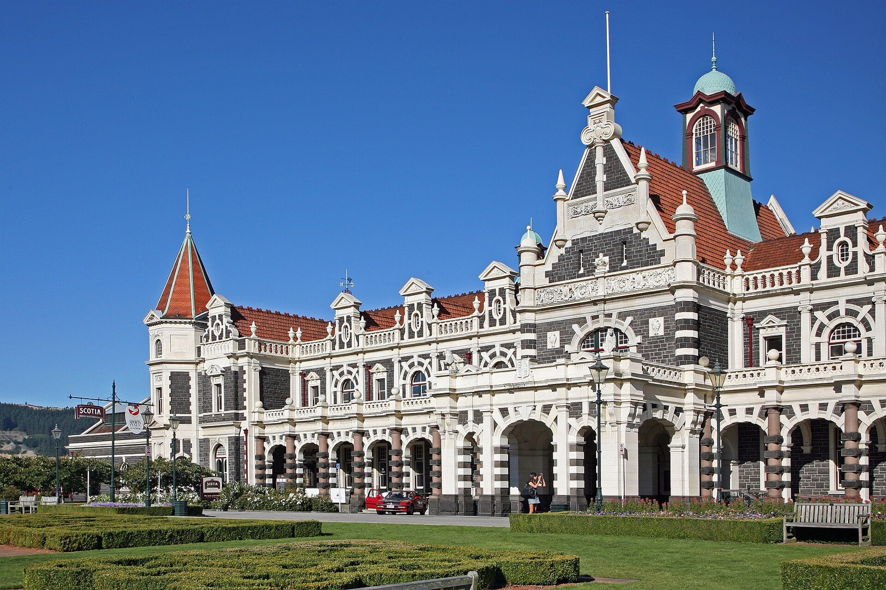
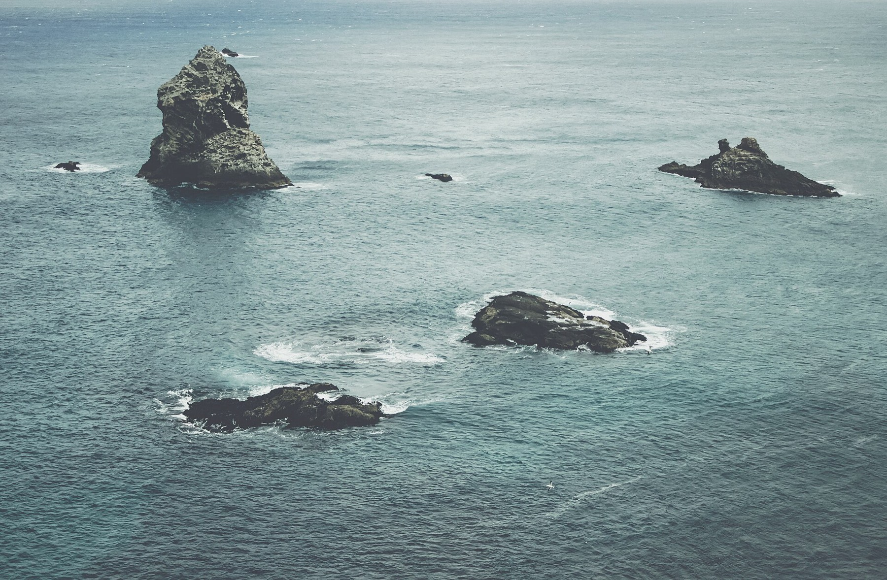
Sandfly Bay 安排了两次（25 日傍晚、27 日上午），一次赌落日一次赌光线；小企鹅归巢是固定场次，必须在天黑前到达 Pilots Beach，迟到就进不去。
Chapter 03
上午在半岛补一次 Sandfly Bay，中午翻过中奥塔哥到皇后镇。第二天清早六点二十去 NZONE，出舱高度 15,000 英尺，落地时天刚亮透；下午去箭镇买毛衣、吃 Fergburger，傍晚看天气决定要不要上天空缆车玩 Luge。
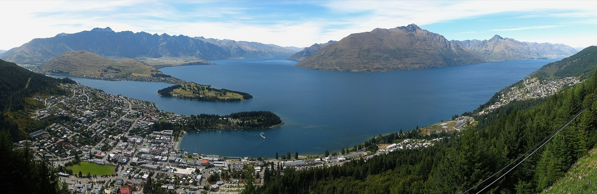
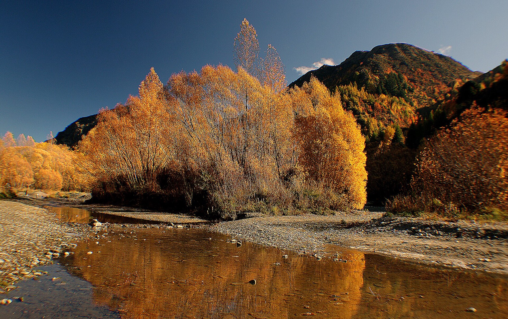
跳伞和 Luge 都吃天气，所以皇后镇留了四晚：任何一项被吹掉，后面两天都还有位置可以挪。箭镇离皇后镇只要 20 分钟，是被雨天赶下山之后最好的备选。
Chapter 04
沿瓦卡蒂普湖西岸开一小时到格林诺奇，跟向导进达特／里斯河谷做冰川徒步——这是全程单项最贵的一天。第二天分头行动：一人去卡德罗纳滑雪场，其余人在皇后镇睡到自然醒，中午集合去 Shotover Jet 坐喷气艇。
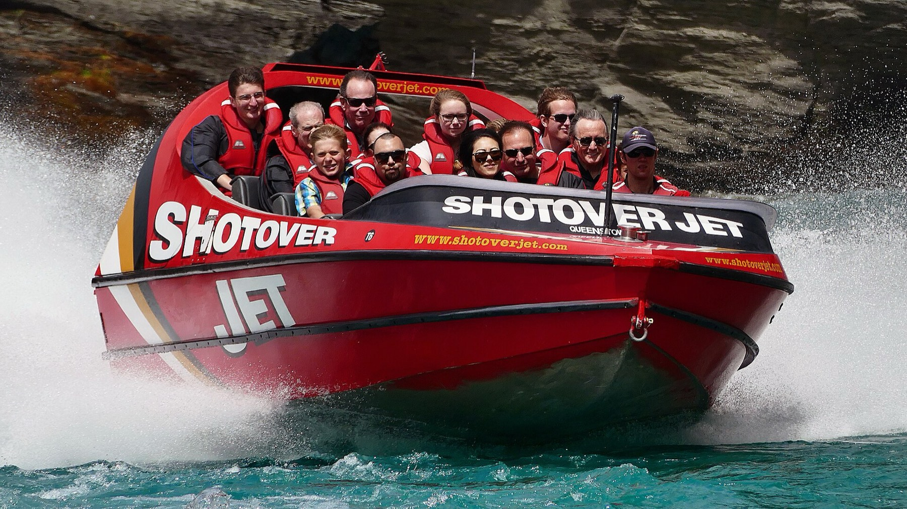
冰川徒步的集合时间是 13:30，所以这天上午刻意留白——不安排任何需要赶的行程，避免向导等人。喷气艇是自驾集合，导航到 Arthurs Point 而不是皇后镇市区。
Chapter 05
翻皇冠山脉到瓦纳卡只要一小时。上午先去湖边和那棵神树，吃 brunch、逛几家小店；下午进马特波恩国家公园走 Rob Roy Glacier Track，来回 3—4 小时，末段抬头就是悬冰川。傍晚继续北上，宿在麦肯奇盆地的 Twizel。
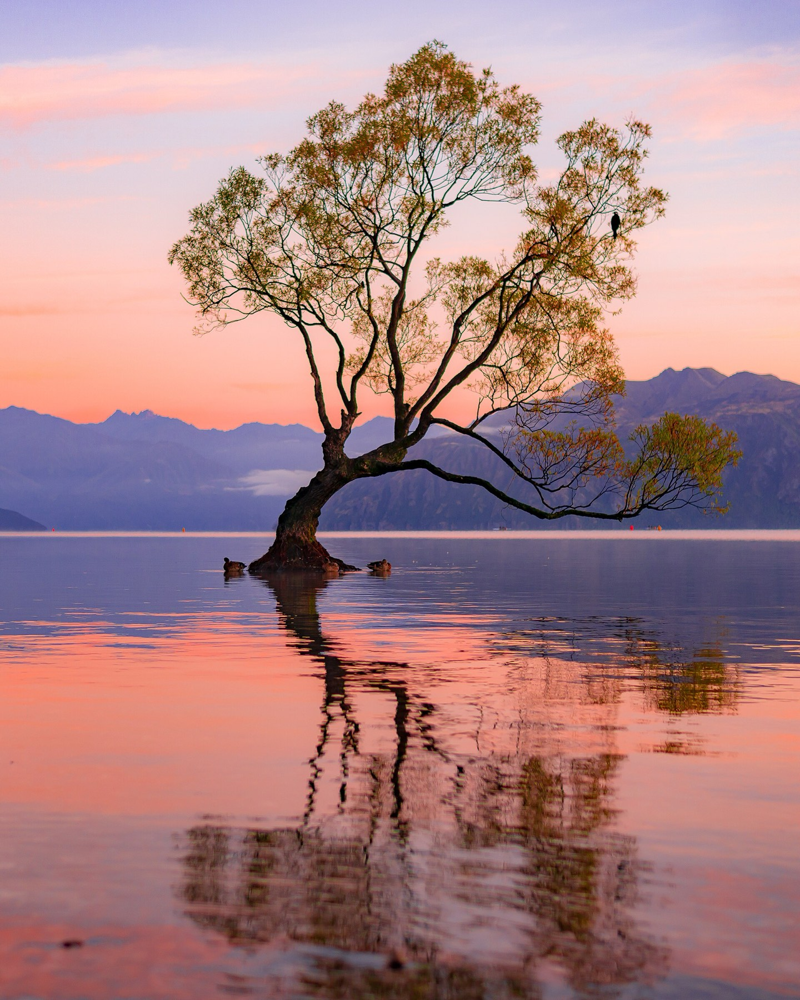
神树在清晨和日落时人最少；Rob Roy 的入口 Raspberry Creek 停车场需要经过一段无桥涉水路面，雨后水位会上涨，出发前先查 DOC 的步道状态。
Chapter 06
从 Twizel 半小时进库克山国家公园，上午走胡克步道和塔斯曼冰川步道，看终端湖上的浮冰。下午翻到蒂卡波，这是奥拉基·麦肯奇国际暗夜保护区的核心——住一晚，把夜空留够时间。第二天上午在湖边慢慢逛，下午长途开去凯库拉。
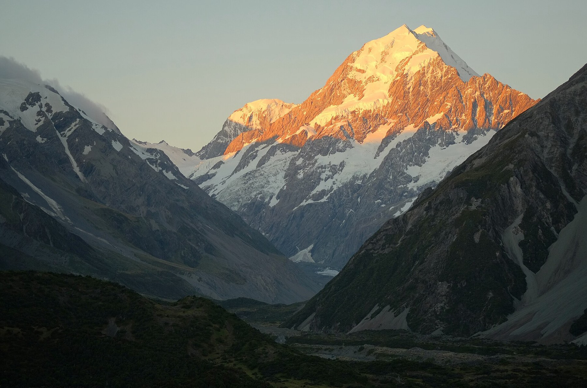
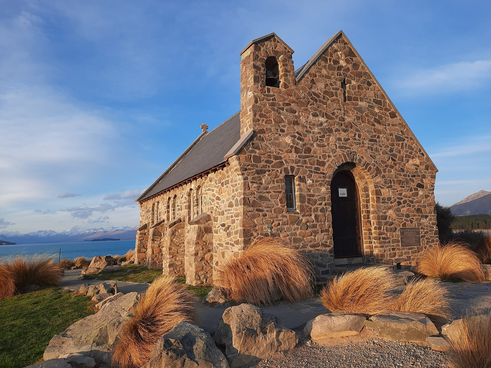
胡克步道全程平缓、来回约 3 小时，是库克山性价比最高的一条；蒂卡波到凯库拉这段 5 小时是全程最长的一次驾驶，安排在上午先玩够、下午专心开车。
Chapter 07
凯库拉海沟离岸只有几公里，深水把抹香鲸、海豚和信天翁都带到了岸边。上午的安排最近改宽松了：先在小镇慢慢逛，有精力再加一趟皮划艇追海豚；下午才是正事——出海观鲸。原来约的 Tomo 船长海钓预订单还留在表里，出发前确认一下要不要留着。
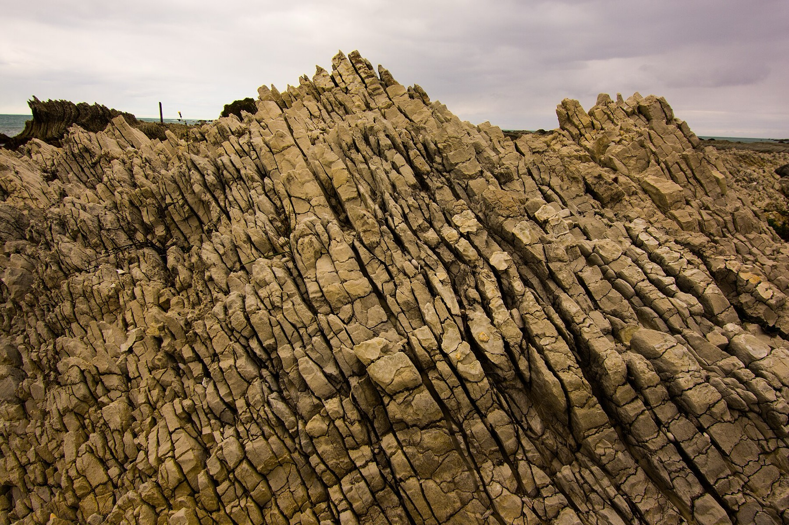
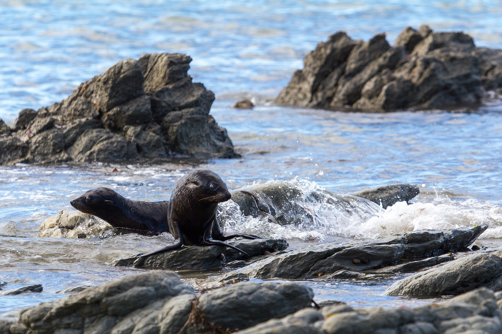
凯库拉是全程唯一「雪山直接压在海面上」的地方。出海受海况影响，观鲸公司会在开船前几小时通知；提前备好晕船药，比临时买有用。
Chapter 08
上午从凯库拉开回基督城还车，下午飞墨尔本，住机场旁的酒店，第二天中午直飞香港。这一段没有安排任何观光——把 1,900 公里之后的疲惫，留给一次干净的收尾。
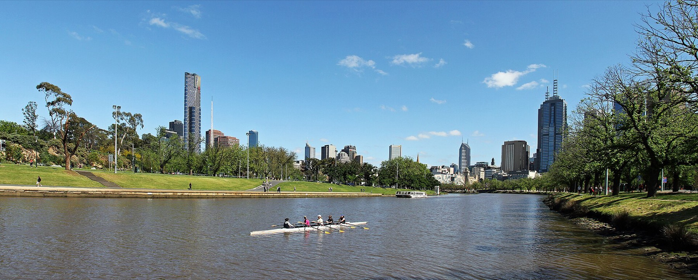
墨尔本这一晚只是过夜衔接，住机场酒店而不是市区，是为了第二天 11:15 的航班不用再赶一次交通。如果航班改期，市区往返机场大约 45 分钟。
Budget & bookings · 钱与硬票
下面只统计已确认金额，按人均口径换算成人民币。同一项的分摊人数不同（机票 2 人、住宿多为 6 人、墨尔本 4 人），所以「人均」是按各自实际分摊算的，不是简单除以 6。
扣掉机票后为 ¥14,778 / 人。餐饮、油费、停车、零星门票、保险与购物均未计入。
机票为两人一单，租车为六人分摊；南岛全程自驾约 1,900 公里，油费未含在租车里。
| 项目 | 分摊 | 总额 | 人均 | 付款人 |
|---|---|---|---|---|
| 国际及跨塔斯曼机票 HKG → SYD → CHC ／ CHC → MEL → HKG | 2 人 | ¥24,168.00 | ¥12,084.00 | 阿稻 |
| 租车（全程，含保险） | 6 人 | ¥10,000.00 | ¥1,666.67 | 卡姐 |
| 交通小计 | ¥13,750.67 | — | ||
全部已预订。基督城和墨尔本是机场过夜，皇后镇连住四晚作为天气缓冲基地。
| 日期 | 住处 | 晚数 / 分摊 | 总额 | 人均 |
|---|---|---|---|---|
| 09.24 | 基督城 Sudima Christchurch Airport | 1 晚 / 2 人 | ¥683.89 | ¥341.95 |
| 09.25 — 09.26 | 但尼丁 | 2 晚 / 6 人 | ¥3,671.04 | ¥611.84 |
| 09.27 — 09.30 | 皇后镇 | 4 晚 / 6 人 | ¥14,400.00 | ¥2,400.00 |
| 10.01 | Twizel | 1 晚 / 6 人 | ¥2,436.92 | ¥406.15 |
| 10.02 | 蒂卡波湖 | 1 晚 / 6 人 | ¥5,600.00 | ¥933.33 |
| 10.03 — 10.04 | 凯库拉 | 2 晚 / 6 人 | ¥5,257.68 | ¥876.28 |
| 10.05 | 墨尔本机场 Quality Hotel | 1 晚 / 4 人 | ¥1,417.00 | ¥354.25 |
| 住宿小计 | ¥5,923.80 | |||
四项已付款、票据已存档；另有两项待预订（Jervois 牛排、天空缆车 Luge）与一项自付（卡德罗纳滑雪）。
| 日期 | 项目 | 集合点 | 人均 | 状态 |
|---|---|---|---|---|
| 09.28 | NZONE 跳伞 15,000ft | 35 Shotover Street, Queenstown | ¥1,976.40 | 已预订 |
| 09.29 | 格林诺奇冰川徒步 | 35 Mull Street, Glenorchy | ¥2,800.00 | 已预订 |
| 09.30 | Shotover Jet 喷气艇 | 3 Arthurs Point Road（需自驾） | — | 已预订 |
| 09.26 | 小企鹅归巢 | 1245 Harington Point Road | — | 已预订 |
| 10.04 | Tomo 船长海钓（改小镇逛逛后待定） | 24 Moa Road 对面码头 | ¥536.40 | 预订单在，待确认 |
| 10.04 | 观鲸 Whale Watch Kaikoura | 1 Whaleway Station Road | ¥666.00 | 已预订 |
| 09.28 | 天空缆车 + Luge | Skyline Gondola Base, 53 Brecon St | 待定 | 待预订 |
| 09.27 | Jervois Steak House 牛排 | 皇后镇市区 | 待定 | 待订位 |
| 09.30 | 卡德罗纳滑雪（阿韬） | 皇后镇往返班车 | 自付 | 待确认 |
| 已付款项目小计 | ¥5,978.80 | — | ||
澳洲签证已出（中转停留悉尼、墨尔本需要）；新西兰方向的签证/NZeTA 状态仍待确认。
| 项目 | 人均 | 状态 | 说明 |
|---|---|---|---|
| 澳洲签证 | ¥1,209.12 | 已出签 | 悉尼一日游 + 墨尔本过夜都需要 |
| 新西兰签证 / NZeTA | 待确认 | 进行中 | 材料清单见「行前清单」页 |
| 签证小计 | ¥1,209.12 | — | |
以下项目按当地现付，建议每人再预留 ¥4,000—6,000 的活动资金：三餐（南岛餐厅普遍偏贵）、汽油与停车、天空缆车 Luge、卡德罗纳滑雪、零星门票与国家公园步道停车、旅行保险，以及毛衣、羊毛制品这类必然发生的购物。
Before you go · 南岛预习
这一页分两层：上面是这条线上真正会影响体验的实用常识；下面是一个小书架——地质、动物、人文各一架，26 篇来自 GNS Science、DOC、NIWA、NASA、Te Ara、Waitangi Tribunal、NZ Geographic 与同行评审期刊的文章，都标了阅读时长和对应哪一天。长途车程里听读最合适。
南岛的骨架来自一次仍在进行的碰撞：太平洋板块与澳洲板块在阿尔卑斯断层斜向挤压，过去 1200 万年把南阿尔卑斯抬升了约 20 公里，而最高峰今天只有 3724 米——被抬起的岩体几乎同步被侵蚀掉（GNS Science）。侵蚀的主力是冰：2.2 万–1.6 万年前，塔斯曼冰川与 Murchison、Hooker、Mueller 冰流合并，曾延伸约 115 公里，把谷地刨成 U 型，退却时留下一道道冰碛垄。麦肯齐盆地至少保留四次冰进的痕迹，蒂卡波湖被约 1.2 万–1.4 万年前的冰碛拦住，长约 30 公里、深约 120 米（DOC）。
冰川磨蚀基岩产出极细的岩粉，随融水下山：Godley 河把三条冰川的岩粉送进蒂卡波湖，塔斯曼河把塔斯曼与胡克冰川的岩粉送进普卡基湖。颗粒太细、长期悬浮不沉，优先散射蓝绿光——于是湖水呈现那种不像天然色的青绿（NASA Earth Observatory）。而冰川本身仍在后退：塔斯曼冰川 1990–2015 年退缩约 4.5 公里，主要靠冰舌在自生冰前湖中崩解；1962–2018 年新西兰冰川损失约 38% 体积（Te Ara）。你看到的每一片浮冰、每一道青绿，都是这条链条的当下截面。
数字来源：GNS Science、DOC、NASA Earth Observatory、Te Ara: The Encyclopedia of New Zealand。各条出处见下方书架。
Practical · 实用常识
不是攻略，是这条线上真正会影响体验的常识。看完这六张卡，行程里那些「为什么这样安排」大概就说得通了。
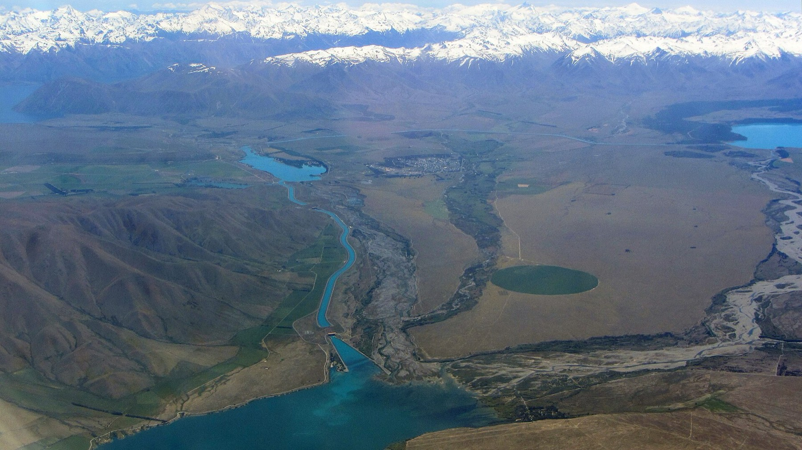
南岛内陆的九月底刚出冬季：白天可能 12—16 °C，日落后山谷会掉到接近零度，皇冠山脉和林迪斯山口清晨还可能结霜。行李按「三层穿法」准备：速干内层 + 抓绒 + 防风防雨外层，比带一件厚外套更管用。
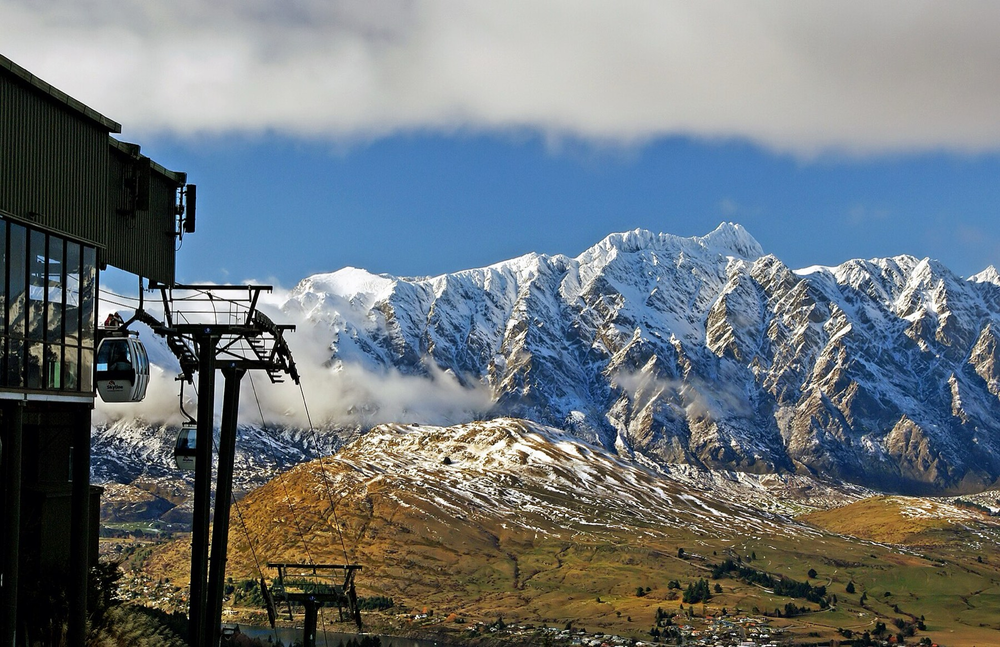
新西兰靠左行驶、方向盘在右。南岛乡道上单车道桥（one lane bridge）很常见，看清蓝白牌谁有优先权；砂石路（gravel road）必须减速——Rob Roy 步道口和很多观景点都在砂石路尽头，多数租车合同对砂石路损伤是免责的。
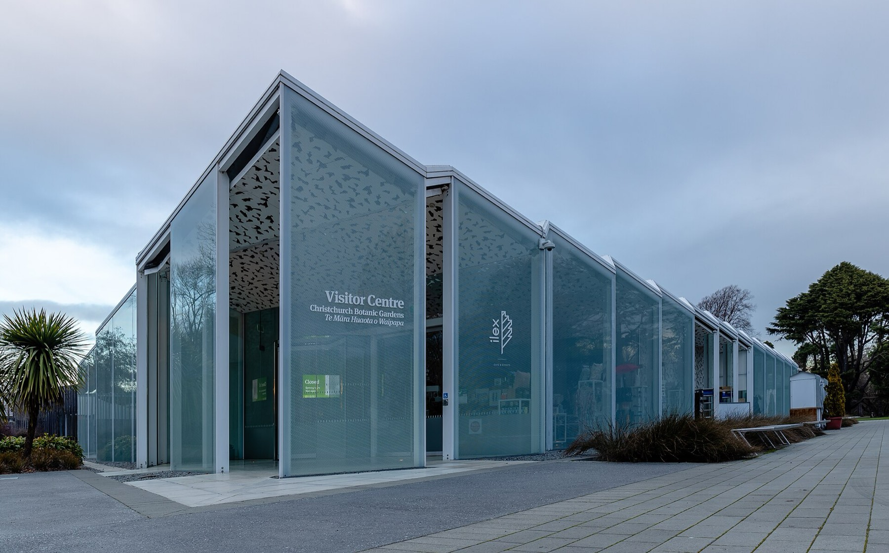
这趟行程两次经过基督城：第一次只在机场旁过夜取车，最后一次是还车赶飞机。中间没有留出市区时间——如果想看重建后的纸板教堂和植物园，最好从最后一天的还车时段里挤，而不是指望第一天早上。
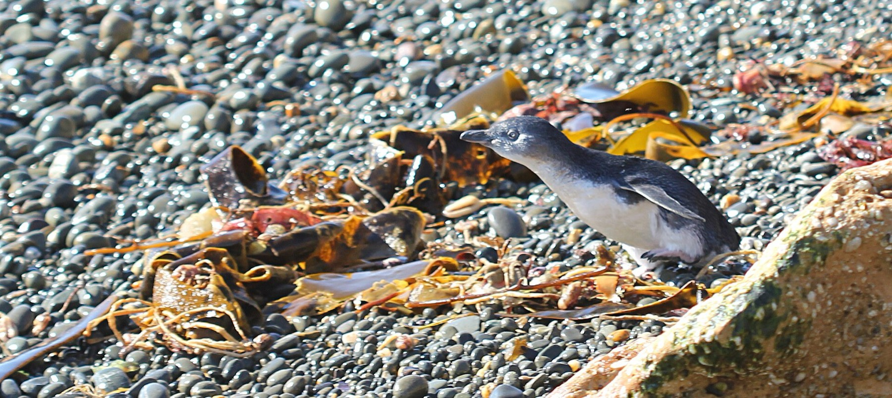
小蓝企鹅是世界上最小的企鹅，天黑后成群上岸回巢。观赏区严格禁用闪光灯和手电，也不能站在它们的通道上。Sandfly Bay 的新西兰海狮同理——至少保持 10 米，永远不要挡在它和海之间。
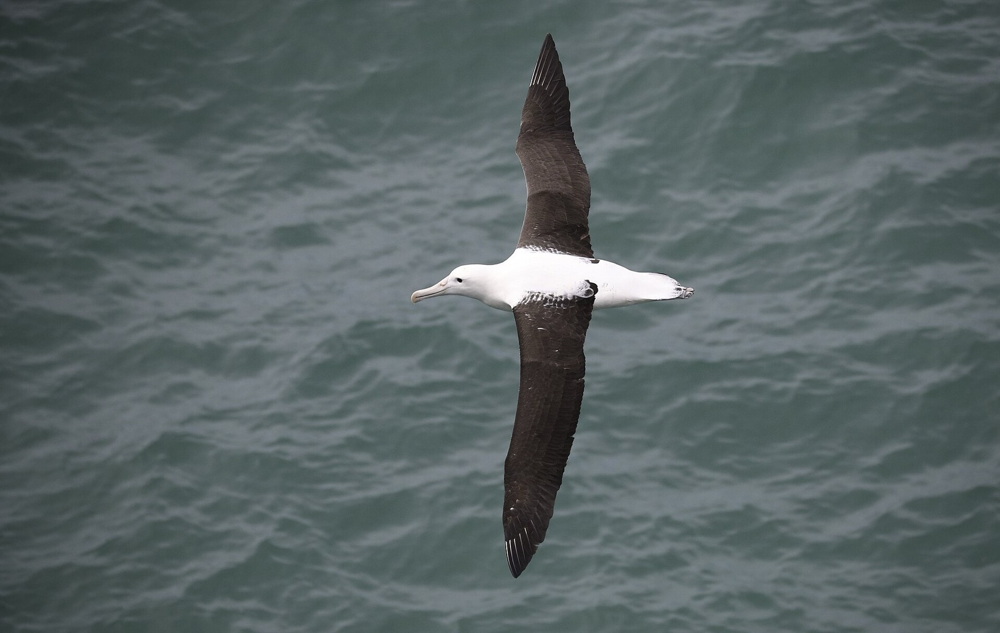
从但尼丁到半岛尽头 Taiaroa Head 只有 30 公里，但沿海那条路窄、弯多、限速低，单程要接近一小时。信天翁中心和企鹅归巢都在最尽头，安排在同一个傍晚最省时间——这也是行程把 Tunnel Beach 放在中午的原因。
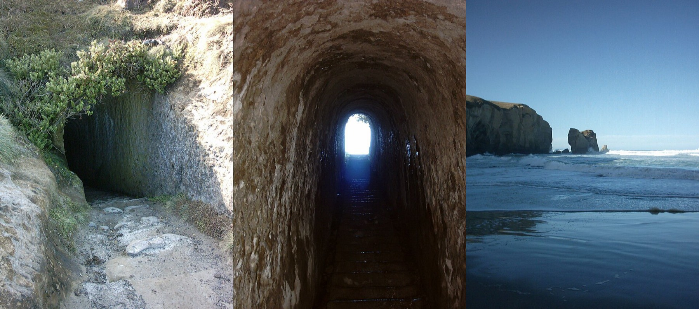
Tunnel Beach 的隧道和沙滩在高潮位时会被淹，出发前查一次潮汐表；蒂卡波观星则要看月相——满月前后银河会被冲淡，所以那一晚的重点不是「能不能看到」，而是「几点云散」。两件事都建议当天再确认，别提前锁死时间。
Reading 01 · Geography & Geology
一条因果链：板块碰撞 → 山脉隆升 → 冰川侵蚀 → 岩粉入湖 → 青绿湖水；再加上凯库拉的海底峡谷和麦肯齐盆地的暗夜。读完这一架，路上每个观景台都能自己讲解。
GNS Science / Earth Sciences New Zealand
阿尔卑斯断层是太平洋板块与澳洲板块在南岛的陆上边界，历史上每次破裂的震级约 M8.0。过去 1200 万年间南阿尔卑斯被抬升约 20 公里，而山体只有约 3.7 公里高——隆升被侵蚀几乎同步削平。这解释了为什么这条山脉「又新又碎」，滑坡与冰川碎屑量惊人。
AF8 计划官方站（含 FAQ）
以「最可信情景」为基础的跨区域应急计划：研究显示未来 50 年阿尔卑斯断层发生地震的概率约 75%，其中约五分之四的可能是 M8 以上，情景假设破裂从南韦斯特兰起、向北拉链式扩展。FAQ 页写了自驾者该准备什么——这是全程唯一真正需要放进车里的预案。
NASA Earth Observatory
塔斯曼冰川末端在 1990–2015 年退缩约 4.5 公里，主要机制不是融化而是崩解：冰舌伸进自己融水形成的冰前湖，水体从下方热侵蚀掏空冰壁。这个湖十年间长到约 7 公里，是一个「五十年前并不存在」的地貌。看完再站在塔斯曼湖边，浮冰的意义完全不同。
Te Ara: The Encyclopedia of New Zealand
把「眼前的谷地」换算成「曾经的冰体」最好的一篇：塔斯曼冰川今长约 29 公里、厚达 600 米；2.2 万–1.6 万年前它与 Murchison、Hooker、Mueller 冰流合并，曾延伸约 115 公里。1962–2018 年间新西兰冰川损失了约 38% 的体积。
NASA Earth Observatory
颜色来自悬浮的冰川岩粉，不是矿物溶解。影像显示 Godley 河把 Classen、Gray、Godley 三条冰川的融水带进蒂卡波湖北端；塔斯曼与胡克冰川的融水则经塔斯曼河进入普卡基湖。细颗粒优先散射蓝绿波段，浓度越高越偏乳白青绿——所以同一个湖不同季节、不同湖湾颜色都不一样。
DOC 新西兰保护部
盆地里能辨认出至少四次主要冰进留下的冰碛垄；蒂卡波湖正位于约 1.2 万–1.4 万年前「蒂卡波冰进」的冰碛之后，占据冰退后的谷地，湖长约 30 公里、深约 120 米。配 Te Ara 的南坎特伯雷条目一起读，能看懂上 Waitaki 水电方案如何用运渠与坝把 Ōhau／Pūkaki／Tekapo 串成一套人工水系。
NIWA（含生态恢复进展篇）
2016 年 M7.8 凯库拉地震触发峡谷壁大规模滑塌，形成一次完整的峡谷冲刷，把沉积物一路输送到深海 Hikurangi 通道，峡谷头部底栖生物量被大量清空。这次地震破裂了 21 条以上陆上与海底断层、总长逾 100 公里，并造成大范围海岸抬升——岸边那条死亡海藻带和裸露岩滩就是证据。
Aoraki Mackenzie 暗夜保护区官方
保护区 2012 年获 DarkSky International 认证，面积 4,367 平方公里，是南半球最大、全球第三大。成立基础是麦肯齐盆地的地形与雨影效应：干燥、低湿、少云。约南纬 44° 的 Mt John 天文台可观测大小麦哲伦云、银河系中心与变星系统。
GNS Science（PDF）／GeoTrips
但尼丁市区、奥塔哥半岛与奥塔哥港同属一座已死火山的残骸，原本从今天的但尼丁延伸到约 25 公里外的 Aramoana，近 1000 万年的侵蚀把火山口区改造成海湾。Tunnel Beach 的 Caversham 砂岩是分选良好的海相沉积，沉积时海岸线远在今天位置的内陆；此后约 2000 万年的海岸后退，是构造抬升与火山下方岩浆侵入造成的地壳穹起共同作用的结果。
Reading 02 · Wildlife & Ecology
这条线上的动物几乎都处在「濒危」或「刚从濒危爬回来」的状态，观察距离不是礼貌问题而是法规问题。先读物种档案，再看最下面的距离速查表。
DOC 新西兰保护部
hoiho 是新西兰特有种，等级 Threatened–Nationally Endangered，2019 年估计全球成熟个体仅 4,000–5,000 只。南岛本土 2019 年只剩约 265 对繁殖对，20 年下降 65%；Rakiura 2020 年调查从 2008/09 的 154 对跌到 44 对。威胁是食物短缺、疾病、鼬类与犬类捕食，以及人类干扰——这就是 Sandfly Bay 必须远观的直接原因。
New Zealand Geographic／DOC Sandfly Bay Track
长报道解释了成鸟必须远海觅食、恶劣海况会让它们整日滞岸挨饿。DOC 页给硬数字：企鹅 ≥50 m、海狗与海狮 ≥20 m、禁闪光灯，绝不可挡住上下水路线（否则亲鸟无法回巢喂雏）。沙丘步道陡峭、黄昏光线差，务必多留时间。
DOC 新西兰保护部
kororā 是世界最小的企鹅，高约 25 cm、重约 1 kg，黄昏成筏上岸。Takiharuru／Pilots Beach 约 500 只、200 多对繁殖对，观众固定在观景平台，就是为了不切断归巢路线；场地允许无闪光摄影但禁三脚架。依赖夜视的眼睛被强光击中会迷失方向甚至弃巢——这是「禁闪光灯」的科学依据。
DOC／NZ Geographic
北方皇家信天翁 toroa 约 8 岁开始繁殖、通常两年养一雏，等级 Nationally Vulnerable，全球成熟个体约 17,000 只。泰亚罗瓦角是全球唯一的大陆繁殖地，但只有约 70 对（全球 1%），其余约 5,500 对在查塔姆群岛且仍在下降。1920 年首次记录产卵后，因偷蛋与人为干扰，整整 16 年没能成功育出幼鸟。
DOC 新西兰保护部
kekeno 曾被商业猎杀到濒临灭绝，现已恢复到沿岸随处可见，约一半时间在海里追鱼与乌贼。官方要求至少保持 20 m，不要站在它和海之间——挡住退路的海狗会咬人；独处的幼崽属正常现象，千万不要搬动或「救助」。
Deep-Sea Research（经 ScienceDirect）
凯库拉海底峡谷把深水带到离岸几公里处，形成雄性抹香鲸全年可见的觅食场。这也是研究船只干扰的天然实验室：论文关注下潜—换气周期与观鲸船接近之间的关系。付费墙内可只读摘要，但足以理解「为什么观鲸船必须保持 50 m 并平行跟随」。
DOC（另见dusky dolphin）
Hector's dolphin 是新西兰特有、世界最小海豚之一，现存约 15,000 只，等级 Nationally Vulnerable，最大威胁是刺网与拖网缠绕。凯库拉近岸更常见的是暗色斑纹海豚，成群跳跃、数量 2 万–10 万只。皮划艇「追海豚」要看清运营方是否遵守不切断路线、不绕圈穿群的规定。
NZ Geographic／NZ Journal of Zoology 综述／DOC 1080 政策
亚瑟隘口停车场的「kea 群」掩盖了南阿尔卑斯种群明显下降的事实。偏远山地唯一可行的害兽控制是空投 1080，而部分 kea 会主动取食毒饵；综述引用的研究显示风险与离人类聚落的距离强相关——小于 20 km 的种群比大于 40 km 的更可能摄入致死剂量。这是理解新西兰生态政策最好的入口：没有无代价的选项。
NZ Legislation／DOC Sharing our coasts
船只不得进入鲸类 50 m 内；人在水中不得距鲸类 100 m 内。若某海豚群或海豹群周围已有 3 艘及以上船只或飞机，其他须退到 300 m 外；任何人、车、船都不得切断动物的前进路线。DOC 补充：与须鲸或抹香鲸母幼对保持 200 m 以上，禁止与鲸共游。违规最高罚款 10,000 纽元。
| 中文名 | 毛利语名 | 学名 | 一句速认 |
|---|---|---|---|
| 黄眼企鹅 | hoiho | Megadyptes antipodes | 世界最稀有企鹅之一，2019 年全球成熟个体仅 4,000–5,000 只 |
| 小蓝企鹅 | kororā | Eudyptula minor | 世界最小企鹅，高约 25 cm、重约 1 kg，黄昏成筏上岸 |
| 北方皇家信天翁 | toroa | Diomedea sanfordi | 全球唯一大陆繁殖地在 Pukekura，约 70 对（占全球 1%） |
| 新西兰海狗 | kekeno | Arctocephalus forsteri | 曾被猎杀到濒危、现已恢复；约一半时间在海中追鱼与乌贼 |
| 抹香鲸 | parāoa | Physeter macrocephalus | 凯库拉海底峡谷是雄鲸的全年觅食场 |
| 黑白海豚 | tutumairekurai / tūpoupou | Cephalorhynchus hectori | 世界最小海豚之一，现存约 15,000 只，Nationally Vulnerable |
| 暗色斑纹海豚 | — | Lagenorhynchus obscurus | 2 万–10 万只，凯库拉是热点，跳跃极活跃 |
| 啄羊鹦鹉 | kea | Nestor notabilis | 高智商高山鹦鹉；距人类聚落 <20 km 的种群 1080 中毒风险显著更高 |
Reading 03 · People & Society
这片土地上的人：Ngāi Tahu 与条约、双语地名、淘金潮里的华人矿工、苏格兰移民的但尼丁，以及高山牧场、皇后镇住房与灾后重建这些还在发生的当代议题。
Te Rūnanga o Ngāi Tahu／NZ History
Ngāi Tahu 1986 年向 Waitangi Tribunal 提交 Wai 27 索赔，成为该庭首个可追溯至 1840 年的大规模历史索赔，听证在 1987–1989 年进行。1991 年 2 月 1 日发布的《Ngāi Tahu Report 1991》分三卷、逾 1200 页，把申诉归纳为「九棵大树」。起点是 1848 年之后一系列廉价土地购买中，皇室承诺的保留地大量没有兑现。
NZ Legislation
和解契约 1997 年 11 月 21 日签署，法案 1998 年 9 月 29 日通过，经济赔偿 1.7 亿新元。皇室在道歉文本中承认自己「行为不可饶恕（unconscionably），并反复违反《怀唐伊条约》原则」。其中关于 Aoraki／Mount Cook 归还与回赠的条款，最好和第 3 条对照读——只读 Preamble 与 Part 1 就够。
Waitangi Tribunal／NZ History
1840 年 2 月 6 日起签署的九份文本中，500 余位 rangatira 几乎全部签的是毛利文本。英文第一条让出「sovereignty（主权）」，毛利文却写作「te kāwanatanga katoa（完整的治理权）」；第二条英文保证「undisturbed possession」，毛利文保证的是「tino rangatiratanga」。当时毛利社会没有对应「主权」的词，这道翻译裂缝至今支撑着法理争论。
The Conversation
2024 年 11 月法案提交，引发全国 hīkoi（游行）于 11 月 19 日抵达国会。Waitangi Tribunal 指出立法过程刻意未与毛利协商，违反伙伴关系与善治原则，并可能危及既有和解的持久性。理解这场争论，才读得懂路牌、机构名与双语标识背后的政治张力。
LINZ／新西兰地名委员会（另见 地名总览）
1998 年 Ngāi Tahu 和解一次性确立 87 个英／毛利双名，包括 Aoraki / Mount Cook，国家公园同步改名。官方标准规定双名用「空格＋斜杠＋空格」分隔，毛利名通常置前。法律安排是：皇室先将 Aoraki 地权授予 Te Rūnanga o Ngāi Tahu，部族随即回赠全体国民，并以 Tōpuni 制度承载部族文化价值——所有权象征性归还，公共进入不受影响。
Te Ara／Ngāi Tahu 官方
源于 1996 年 6 月 14 日的「On Account」预付和解，《Ngāi Tahu (Pounamu Vesting) Act 1997》于 1997 年 9 月 25 日通过，把部族领域（takiwā）及邻接领海内所有天然状态 pounamu 的所有权归还 Te Rūnanga o Ngāi Tahu；Arahura 河流域部分由 Māwhera Corporation 持有。买绿石前读这一篇，能分辨什么叫来源正当。
NZ History／Te Reo（NZ 语言学会，PDF）
1982 年首间 kōhanga reo（语言巢）在 Lower Hutt 开办，1991 年已有 630 间、10,451 名儿童入园；1987 年毛利语成为官方语言并设立语言委员会。2013 年人口普查显示 21.3% 的毛利人会说毛利语（125,352 人）。基于 Te Kupenga 2018 的分析显示，最年轻一代在母语使用者中已占多数，是复兴的关键信号。
DOC／NZ History
1866 年奥塔哥华人矿工不足 200 人，1874 年普查已达 3,564 人，多在金矿区劳作。1881 年政府开征人头税 10 英镑、后提高到 100 英镑，直到 1944 年才废止；2002 年新西兰政府就此正式向华人社群道歉。箭镇聚落在 1980 年代初经系统考古发掘，Ah Lum 店铺已修复，是这段移民史保存最完整的现场。
Te Ara（Scots／Otago region）
1848 年自由教会移民乘 John Wickliffe 与 Philip Laing 抵达奥塔哥港，城市名 Dunedin 取自爱丁堡的古盖尔语名 Dùn Èideann，测量师 Charles Kettle 刻意仿爱丁堡布局。黄金与长老会共同奠定奥塔哥：1880 年前后但尼丁是全国最大最富的城市，奥塔哥大学与医学院的声望延续至今；而淘金者迅速在人数上超过了当地 Ngāi Tahu。
Ministry for the Environment《Our Land 2021》／QLDC 住房简报／ODT
1998 年《Crown Pastoral Land Act》把 tenure review 制度化：租户可买下部分土地为永久产权，其余划归保护地。官方评估指出麦肯齐盆地底部大量土地因此私有化，到 2020 年海拔 800 米以下受任何形式保护的不足十分之一，该制度已被终止。皇后镇一侧：截至 2023 年 6 月年度 330 万游客、约每位居民对应 63 名游客，平均房价超过 180 万新元，已出现居民住车里的情形。
Kōtuitui / Journal of the Royal Society of New Zealand
2010 年 9 月与 2011 年 2 月地震后，602 公顷住宅用地被划为红区、居民迁离。论文追踪 Ōtākaro Avon 河廊的「管理式撤退」如何转为治理创新：市议会设立共治筹备委员会，由 Ngāi Tūāhuriri 与市议会各派等量代表，到 2023 年底已订出项目评估原则。和凯库拉 2016 年 11 月 14 日地震后的社区恢复研究对照读，会发现「重建」是社会过程，而不是工程节点。
南岛（Te Waipounamu）的主要部族，18 世纪中叶前已通过迁徙、战争与联姻成为大部分南岛的 tangata whenua（土地之民）。1986 年立案、1991 年获 Tribunal 报告、1998 年完成和解，赔偿 1.7 亿新元。
来源：NZ History、Waitangi Tribunal有英文与毛利文两个版本。英文写「让出主权」，毛利文写「让出 kāwanatanga（治理权）」并保证 tino rangatiratanga。理解这道差异，才理解今天关于条约原则的全部争论。
来源：Waitangi Tribunal、NZ History1998 年和解一次性确立 87 个双语地名，最高峰正式名为 Aoraki / Mount Cook，国家公园同步改名。官方规则要求毛利名在前、斜杠两侧留空格；Aoraki 由部族接收后回赠全体国民。
来源：LINZ 新西兰地名委员会Ngāi Tahu 世代相传的 taonga（珍宝）。1997 年立法把部族领域内天然状态 pounamu 的所有权归还 Te Rūnanga o Ngāi Tahu——它不只是纪念品，而是有法律归属的文化财。
来源：Te Ara、Ngāi Tahu 官方照看土地、水与资源的责任。1998 年和解中皇室明确承认 Ngāi Tahu 在南岛资源管理上的 kaitiaki 角色，这是双语地名、共治机构与 pounamu 管理制度共同的底层逻辑。与之并列的 manaakitanga 指以尊重与慷慨待客——客人同样有回应此礼的义务。
来源：Ngāi Tahu 官方、NZ LegislationReady to go · 出发自检
勾选状态只保存在当前设备浏览器里，不会上传。清单来自《待购买物品》与《签证材料》两张表，共 5 组、80 余项；证件与签证材料排在最前面，因为它们最不可能临时补救。
Fine print · 最后几句
这条线的风险不在难度，而在时间衔接和天气：只要有一项被吹掉，后面的连锁反应就会开始。
跳伞、Luge、喷气艇、滑雪都受天气影响，所以皇后镇连住四晚。真的遇上坏天气，优先保跳伞和冰川徒步——这两项最贵，也最难补。
Twizel、蒂卡波、格林诺奇之间的路段服务点很少，油表到一半就该加。蒂卡波到凯库拉那 5 小时是全程最长的一段，出发前一定加满。
新西兰生物安全管制极严：徒步鞋底的泥、任何食物、蜂蜜、种子都要申报，漏报是当场罚款。徒步鞋出发前刷干净，能省掉一次开箱检查。